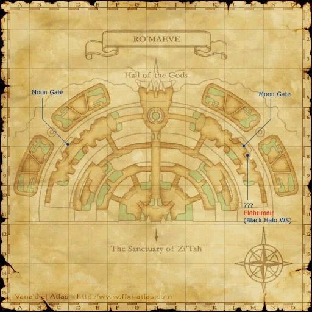
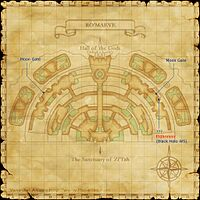

Description
Ro'Maeve is an outdoor area in Li'Telor.
Map

Involved in Quests / Missions
| Quest / Mission | Type | Starter | Location |
|---|---|---|---|
| Divine Might | General | Yve'noile | Shrine of Ru'Avitau |
| Orastery Woes | Weapon Skill (Club) | Kuroido-Moido | Port Windurst (E-7) |
NPCs
- Moongate
Notorious Monsters
| Name | Level | Drops | Steal | Family | Spawns | Notes |
|---|---|---|---|---|---|---|
| Nightmare Vase | 76-78 | Magic Pot Shard Shinogi Mercury Philosopher's Stone | — |  Magic PotsImage source Magic PotsImage source | — | A, M |
| Shikigami Weapon | 77-80 | Yinyang Robe | — |  Evil WeaponsImage source Evil WeaponsImage source | — | A, M |
Regular Monsters


Event Monsters
| Name | Level | Drops | Steal | Family | Spawns | Notes |
|---|---|---|---|---|---|---|
| Eldhrimnir | — | — | — | Magic PotsImage source | 1 | Spawned for quest:Orastery Woes; A, M |
| Mokkurkalfi | — | — | — |  GolemsImage source GolemsImage source | 2 | Spawned for mission: The Final Image; A, M |
Story walkthroughs in this area
| Story | Mission / quest |
|---|---|
| RoZ 8 | Return to Delkfutt’s Tower |
| RoZ 9 | Ro’Maeve |
| RoZ 10 | The Temple of Desolation |
| RoZ Q4 | Divine Might |
| ACP 8 | Remember Me in Your Dreams |
| ASA 8 | Shantotto in Chains |
References
External references describe their own server or retail rules. Documented Zenith changes take precedence.
Map credits: Map 1 — HorizonXI Wiki. Original game maps © SQUARE ENIX; redrawn maps retain the credited authorship and license.

Supplemental NPC names and exits are from the base-world snapshot; expansion conditions can affect availability.
Additional level-75 reference


Map Acquisition
|
This ampitheater-like area is comprised of a series of levels leading up to the top, where one can enter the Hall of the Gods. The high walls made of a bone-like material make for a labyrinthine atmosphere, where dangerous beasts can lurk behind the next turn. Caution is suggested when traversing this dangerous area. |
Connecting Areas
- Hall of the Gods at (H-3)
- Sanctuary of Zi'Tah at (H-11)
Involved in Quests/Missions
| Quest | Type | Starter | Location |
| Divine Might | General | Yve'noile | Shrine of Ru'Avitau (-) |
| Orastery Woes | Weapon Skill (Club) | Kuroido-Moido | Port Windurst (E-7) |
| Mission | Country | Starter | Location |
| Bastok Mission 7-1:The Final Image | Bastok | Bastok Gate Guard | Bastok |
| Windurst Mission 8-1:Vain | Windurst | Windurst Gate Guard | Windurst |
| Windurst Mission 9-2:Moon Reading | Windurst | Windurst Gate Guard | Windurst |
Fishing
|
Weather
| ||||||||||||||
Notorious Monsters Found Here
|
Name |
Level |
Drops |
Steal |
Family |
Spawns |
Notes | |||||||
Eldhrimnir
|
Unknown | Magic Pot | 1 | ||||||||||
Mokkurkalfi
|
Unknown | Golem | 2 | ||||||||||
| Nightmare Vase | 76 - 78 | Magic Pot | 1 | A, M | |||||||||
| Shikigami Weapon | 77 - 80 | Evil Weapon | 1 | A, L, M | |||||||||
|
HP = Detects Low HP; M = Detects Magic; Sc = Follows by Scent; T(S) = True-sight; T(H) = True-hearing JA = Detects job abilities; WS = Detects weaponskills; Z(D) = Asleep in Daytime; Z(N) = Asleep at Nighttime | |||||||||||||
Mobs Found Here
|
Name |
Level |
Drops |
Steal |
Family |
Spawns |
Notes | |||||||
| Apocalyptic Weapon | 78 - 80 | Evil Weapon | 21 | A, L, H, M | |||||||||
| Cannonball | 67 - 68 | Bomb | 4
Spawns During: Fog |
A, S, M | |||||||||
| Cursed Puppet | 65 - 69 | Doll | 29 | A, M | |||||||||
| Darksteel Golem | 80 - 82 | Golem | 8 | A, S, M | |||||||||
| Infernal Weapon | 79 - 81 | Evil Weapon | 21 | A, L, H, M | |||||||||
| Killing Weapon | 60 - 64 | Evil Weapon | 37 | A, L, H, M | |||||||||
| Magic Flagon | 68 - 70 | Magic Pot | 40 | A, M | |||||||||
| Mythril Golem | 69 - 70 | Golem | 3 | A, S, M | |||||||||
| Ominous Weapon | 61 - 63 | Evil Weapon | 29 | A, L, H, M | |||||||||
| Thunder Elemental | 78 - 79 | Elemental | 3 | A, M | |||||||||
| Water Elemental | 78 - 79 | Elemental | 3 | A, M | |||||||||
|
HP = Detects Low HP; M = Detects Magic; Sc = Follows by Scent; T(S) = True-sight; T(H) = True-hearing JA = Detects job abilities; WS = Detects weaponskills; Z(D) = Asleep in Daytime; Z(N) = Asleep at Nighttime | |||||||||||||
Adapted from Eden Wiki: Ro'Maeve · Contributors and history · CC BY-SA 4.0. Revision 45894. Layout, links and optional background text adapted for Zenith.